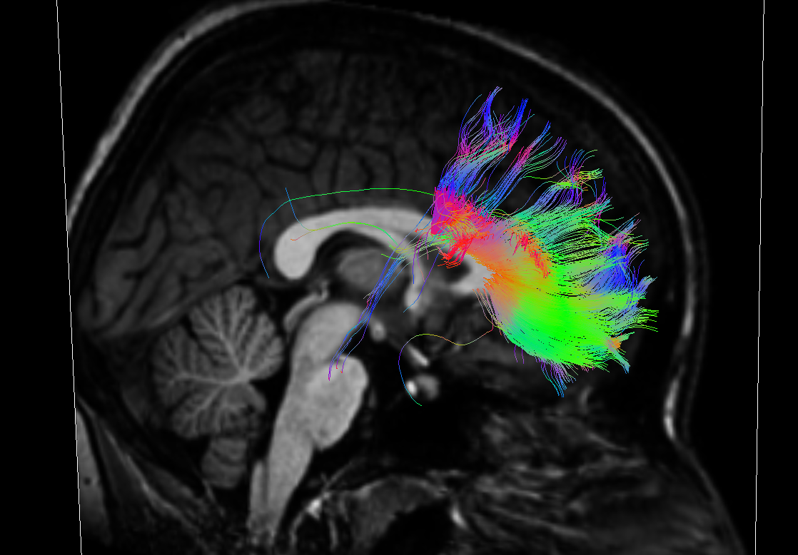

Braviz library¶
Introduction¶
The braviz library aims to simplify the creation of visual analysis tools for brain data. It abstracts common tasks required in such tools so that developers can focus on providing appropriate interfaces and visualizations for a given task.
The library is organized into the following modules
The Read And Filter module simplifies reading and manipulating geometric and tabular data. The Visualization module provides common geometric and spatial data visualization. Finally the Interaction module contains tools for creating user interfaces, and common functions found in visual analysis tasks.
Using braviz it is possible to create graphical applications targeted at domain experts, which can be easily extended to new data. In order to adapt the system to a new data-set a new BaseReader subclass should be created. This class will be the only one that deals with the underlying file-system which contains the project’s geometric data. Once this class is ready, all of the already built applications will work with the new data-set.
{kind=link}
Geometric and Tabular Data¶
Geometric data is what is usually found in scientific visualization. It has coordinates which maps places in the real world. In brain studies it usually captured with an MRI machine and processed using several tools. Specifically the current version deals with
- Structural MRI images
- DWI Images
- Tractography
- fMRI
- Segmentations and reconstructions
- Affine transforms
- Nonlinear warps
The BaseReader class provides a convenient way of accessing this data for the different subjects in the study, automatically applying the necessary geometrical transformations.
Tabular data is commonly found in statistics and infoviz. It can be easily stored in tables and databases. In brain studies it can be demographic and clinical information as well as results in neuro-psychological tests or other performance indicators.
Usually both kinds of data are analyzed and manipulated with different tools. Braviz attempts to integrate them so that patterns and relationships involving function and structure of the brain can be found.
Code Samples¶
import braviz
from braviz.visualization.simple_vtk import SimpleVtkViewer
reader = braviz.readAndFilter.BravizAutoReader()
fibers = reader.get("fibers",119,space="Talairach",
waypoint=["CC_Anterior","CC_Mid_Anterior"],operation="or")
mri = reader.get("MRI",119,space="Talairach",format="vtk")
viewer = SimpleVtkViewer()
viewer.addImg(mri)
viewer.addPolyData(fibers)
viewer.start()
The code above displays the fibers that cross the anterior part of the corpus-callosum of subject 119 together with its structural MRI Image, in the Talairach coordinate systems. It produces the following output in a vtkWindow
{kind=link}
from braviz.readAndFilter import tabular_data
from braviz.visualization.matplotlib_qt_widget import MatplotWidget
from PyQt4 import QtCore, QtGui
app=QtGui.QApplication([])
df = tabular_data.get_data_frame_by_name(["BIRTH_peso5","BIRTH_ballar5"])
mp = MatplotWidget()
mp.draw_scatter(df,"BIRTH_peso5","BIRTH_ballar5")
mp.highlight_id(119)
mp.show()
app.exec_()
The code above reads two variables from the database, creates a scatter plot and highlights the position of subject 119.

This two pieces of code provide the most simple way of combining tabular and geometrical data. For more advanced examples look at gui user manual.
Guides¶
The following guides are meant to help you find your way around the API and see how the different components can be connected.
Interactive work and simple scripts¶
Using braviz from a python terminal and creating simple scripts.
[Not yet available]
Creating a new Qt Application¶
Building a new Qt Application and integrating it with the rest of the system.
[Not yet available]
Dependencies¶
The focus of Braviz is providing useful interactive visualizations for domain experts. As such it can be considered a high level library, focusing on the end user. For calculations, processing, data access and visualization; it relies in the following projects
Thanks a lot to all for making braviz possible.
Contributing¶
Issues¶
Please report bugs, issues and ideas for improvements in the issue tracker
Repository¶
You may find the source code and propose improvements at the mercurial repository